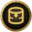
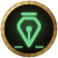
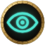
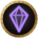
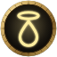
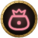
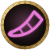

Set up in about two minutes
Every add-on is free. Pick the ones you want, put them in your AddOns folder, and you're done. Updating is the same steps again, and your settings are kept.
What you need
Norgannon Core
Every add-on needs it. Get it once, and update it when you update them.
NorgannonDB
The game data: quests, creatures, items and dungeons. Only some add-ons need it, and the list below says which.
The add-ons you want
Take one, a few or all of them. Each works on its own.
Everything, with the latest version
Compare these with what you have: type /norg in the game, and its page lists the version of each Norgannon add-on you've installed.
 Norgannon CoreGet it once. Every add-on needs it.v1.28.2 On GitHub
Norgannon CoreGet it once. Every add-on needs it.v1.28.2 On GitHub
NorgannonDBThe game data, for the add-ons that say sov1.4.7 On GitHub
NorgannonDB CollectorOptional: helps fix the game datav1.6.0 On GitHub
ClairvoyanceNeeds Norgannon Core and NorgannonDBv0.14.3 On GitHub
Oracle BetaNeeds Norgannon Core and NorgannonDBv0.11.3 On GitHub
MercyNeeds Norgannon Corev0.3.14 On GitHub- BulwarkNeeds Norgannon Corev0.8.1 On GitHub
- RetrospectNeeds Norgannon Core and NorgannonDBv0.10.1 On GitHub

DimensionNeeds Norgannon Core and NorgannonDBv0.15.0 On GitHub- Council BetaNeeds Norgannon Core and NorgannonDBv0.3.2 On GitHub

Muster BetaNeeds Norgannon Corev0.3.1 On GitHub
Three steps
- 1
Download
Get the add-ons you want, plus Norgannon Core. If an add-on needs the game data, get NorgannonDB too. On GitHub, choose Code, then Download ZIP.
- 2
Unzip
Put each folder in
World of Warcraft\_forever_\Interface\AddOns. If a folder's name ends in-main, remove the-main. - 3
Play
Start the game. You'll find every add-on under the Norgannon button on your minimap.
Check it worked
- 1
Look for the star
Start the game. A Norgannon button sits on your minimap, and every add-on you installed is listed under it.
- 2
Not there?
On the character screen, open AddOns and make sure the Norgannon add-ons are ticked.
Keep them up to date
Hear about updates
New versions are posted in #releases on our Discord. Pick the add-ons you use there, and you get a ping when one of them updates. They're also on the home page under What's new.
Update in a minute
Quit the game, download the new version, delete the old folder and unzip the new one in its place. Your settings live elsewhere, so they're kept.
Update Norgannon Core with them
When you update an add-on, get the newest Norgannon Core too. If chat says an add-on needs a newer Norgannon Core, that's the fix.
If something's not right
An add-on doesn't show up
Check the folder names in AddOns. Each add-on's folder sits directly inside AddOns, not inside another folder of the same name, and has no -main on the end.
Chat says an add-on "needs Norgannon Core" or "needs NorgannonDB"
Get the one it names from the list above, or download it again if you already have it, and replace its folder. The add-on starts working at your next login.
No quests, loot or dungeons show
That add-on uses the game data. Get NorgannonDB from the list above.
Still stuck
Ask in #help on our Discord. Say which add-on and what you see.